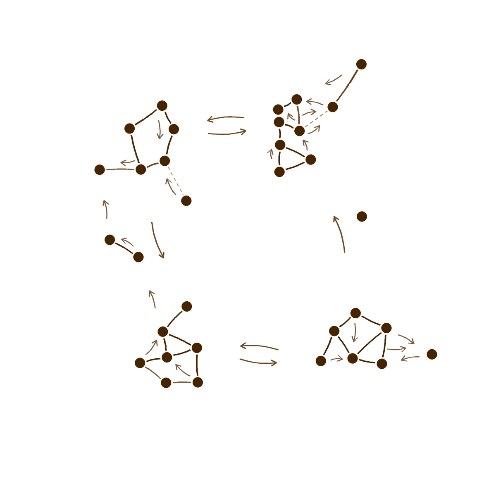
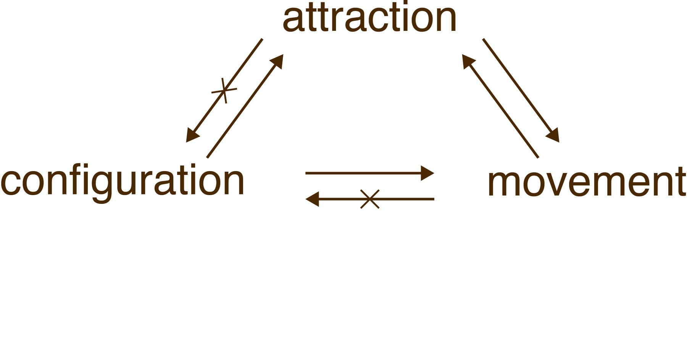
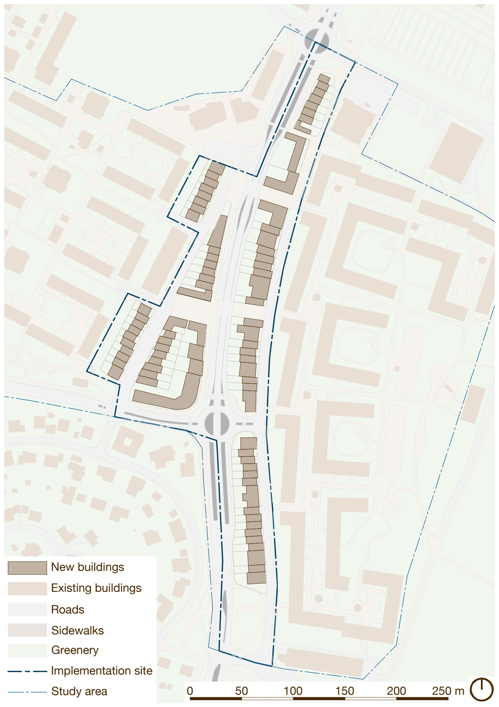
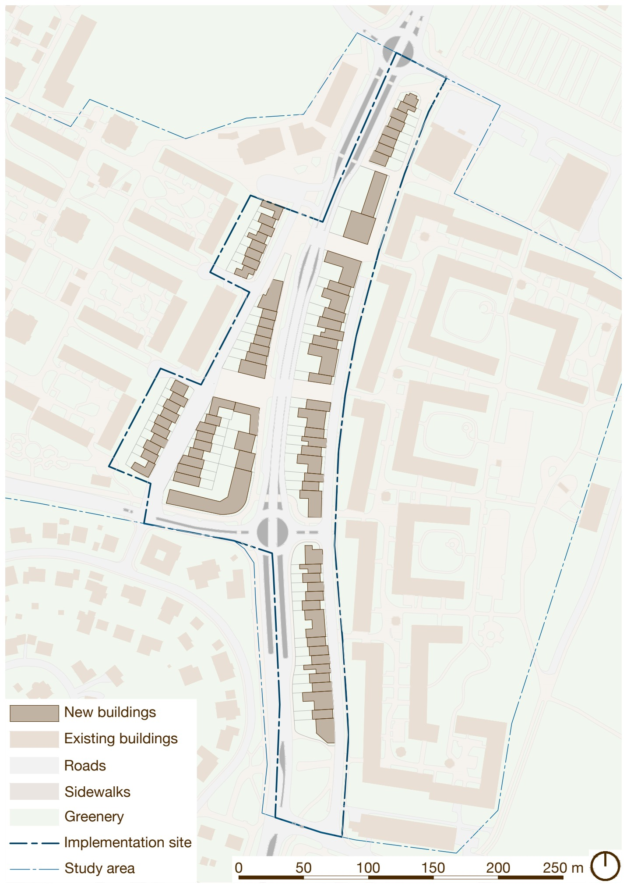

Vauban
Freiburg
“Lively, diverse, intense cities contain the seeds of their own regeneration.”
How can urban planning structure spatial conditions that enable and sustain emergence through self-organisation?
The thesis develops a spatial framework for supporting continued emergence in urban environments. It brings together theories of self-organisation and spatial configuration, case-study analysis, and an application in Gothenburg to examine how urban design can support ongoing adaptation.
Cities evolve through the interactions of many people, each making decisions and responding to the spaces around them. Over time, repeated local interactions can accumulate into larger patterns of activity and urban form.
Self-organisation describes the processes through which order develops from these interactions. Emergence describes the larger patterns that materialise. The thesis considers urban outcomes as properties of ongoing processes, rather than fixed end states.
The arrangement of streets and spaces influences how people move and where their paths intersect. Accessibility and visibility help shape the opportunities for repeated encounter.
Movement and urban activity can reinforce one another. Spatial configuration is therefore central to the conditions that support these interactions over time.
Self-organisation does not automatically produce an adaptive city. If interactions remain too weak, feedback cannot accumulate and patterns may fail to develop. If reinforcement becomes too strong, a single pattern can dominate and reduce the capacity to adapt. The aim is to keep opportunities for repeated encounter, variation and multiple patterns open.
Design can shape the conditions within which urban processes unfold. Plot structure, access to development, and policy and economic instruments influence whether multiple actors can contribute to incremental change. Once space is built, spatial conditions need to continue supporting movement, co-presence and diversity of uses.
The thesis focuses on spatial conditions observable in the built environment. Institutional and economic instruments are acknowledged, but are outside the analysis.


Freiburg
Tokyo
Amsterdam
Select a map to enlarge it. Scroll sideways to compare the sites.
Interaction potential
Interactive drawing available when JavaScript is enabled.
Base imagery © Bing Maps · Drawing by Niki Jaško
The study begins with the existing street network around Litteraturgatan. The dashed boundaries locate the study area and the site within the surrounding neighbourhoods.
Select an area to see its building rules.
Interactive drawing available when JavaScript is enabled.
Highlighted boundary: current selection. Original plan ↗
Rules from the thesis proposal. View the original rule sheet ↗
3 to 5 storeys, maximum 70% plot coverage. Rules updated.
The two plans explore possible development trajectories within the same detaljplan. Both use the same street network, plot structure and planning rules. Architectural expression, the sequence of development and the distribution of uses can vary as different actors make decisions over time.
Small plots allow development to happen in increments. The framework gives these individual decisions a shared structure, while leaving room for different building footprints and relationships to the street. Together, the plans show how the area could evolve through successive rounds of development and change.


Scroll sideways to compare the plans.
The exhibition invited visitors to test the proposal by adding wooden blocks to a shared physical model. A simplified set of rules, derived from the masterplan, guided the placements within the available plots.
Unpainted buildings show the existing context; coloured pieces mark new additions. The sequence records how individual placements accumulate into a collective layout within the shared street and plot structure.